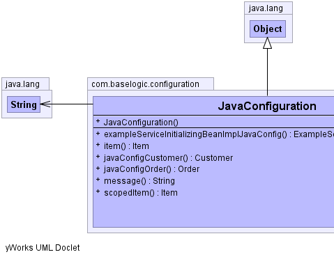
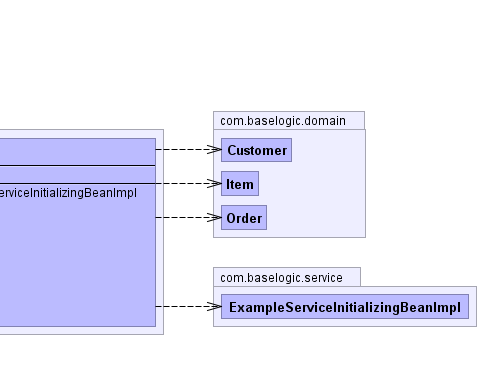

com.baselogic.configuration.JavaConfiguration
com.baselogic.configuration.JavaConfiguration
|
This is the Spring demo [Parent]. | |||||||||
| PREV CLASS NEXT CLASS | FRAMES NO FRAMES | |||||||||
| SUMMARY: NESTED | FIELD | CONSTR | METHOD | DETAIL: FIELD | CONSTR | METHOD | |||||||||
java.lang.Object
@Configuration @PropertySource(value="app-2.properties") public class JavaConfiguration
Java Configuration
Spring Certification objective: 1.5
|  |  |
| Constructor Summary | |
|---|---|
JavaConfiguration()
|
|
| Method Summary | |
|---|---|
ExampleServiceInitializingBeanImpl |
exampleServiceInitializingBeanImplJavaConfig()
|
Item |
item()
When called from a Singleton, and NOT Proxied, this prototype Object is also a Singleton. |
Customer |
javaConfigCustomer()
referenced by getBean("javaConfigCustomer") |
Order |
javaConfigOrder()
referenced by getBean("javaConfigOrder") |
String |
message()
referenced by getBean("message") |
Item |
scopedItem()
|
| Methods inherited from class java.lang.Object |
|---|
clone, equals, finalize, getClass, hashCode, notify, notifyAll, toString, wait, wait, wait |
| Constructor Detail |
|---|
public JavaConfiguration()
| Method Detail |
|---|
@Bean public String message()
@Bean public Customer javaConfigCustomer()
@Bean public Order javaConfigOrder()
@Bean @Scope(value="prototype") public Item item()
@Bean @Scope(value="prototype") public Item scopedItem()
@Bean public ExampleServiceInitializingBeanImpl exampleServiceInitializingBeanImplJavaConfig()
|
This is the Spring demo [Parent]. | |||||||||
| PREV CLASS NEXT CLASS | FRAMES NO FRAMES | |||||||||
| SUMMARY: NESTED | FIELD | CONSTR | METHOD | DETAIL: FIELD | CONSTR | METHOD | |||||||||